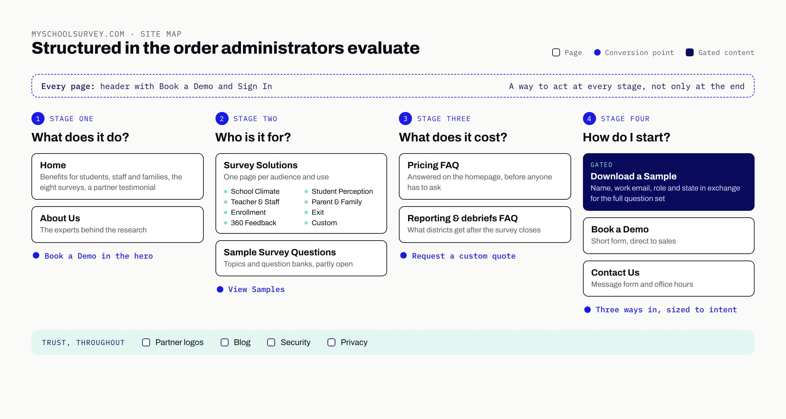
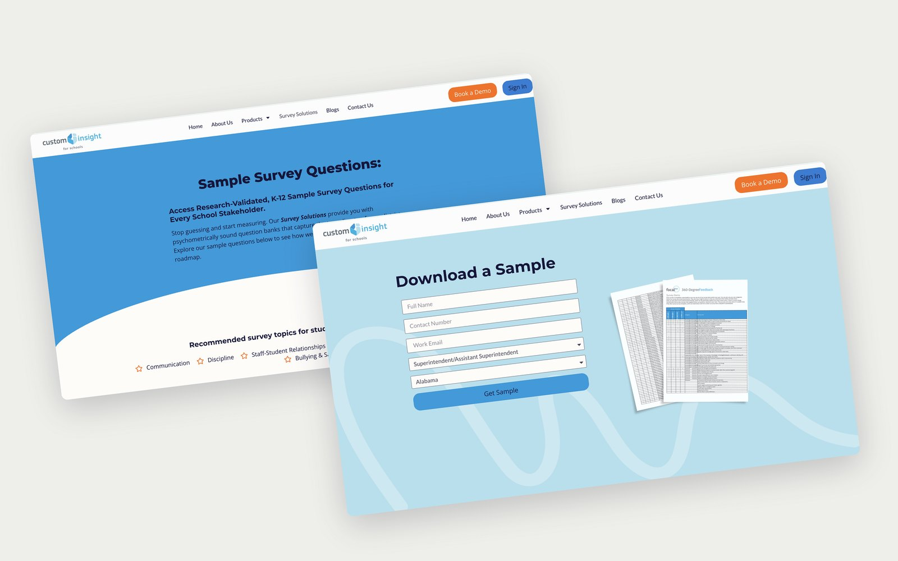
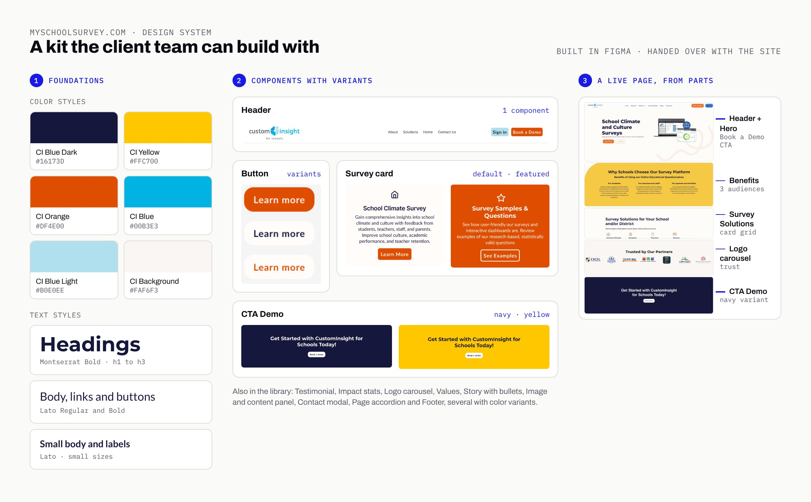

The problem
CustomInsight sells employee engagement and 360 feedback surveys to corporate clients. School climate surveys were one line in that portfolio, and the company wanted to grow it. But a district evaluating a vendor should not have to work out what a product built for them is doing inside a site built for HR directors.
That meant a dedicated site for the education market, competing against larger, better-known K-12 providers. Administrators there spend public money on something they cannot touch first, which makes credibility a design problem before it is a marketing one.
My role
I led creative direction and the design system for a new sub-brand. I researched the competitive set, ran sessions with the client to set goals, audience and messaging, and worked with their content lead so copy and structure took shape together. I moved fast on structure, then put the craft into the visual direction, the conversion strategy and the component system the client team now owns.
Design decisions
Structure the site the way administrators buy
School leaders evaluate in a predictable order: what does it do, who is it for, what does it cost, how do I start. The site answers in that order, with a conversion moment at each decision point instead of one contact page at the end. If someone is convinced on page two, the site should let them act on page two.

Gate the one thing prospects most wanted
The sample surveys were the highest-intent content on the site. Anyone asking to see the actual questions is not browsing. I designed them as a gated download, a short form in exchange for the full set, so the site's most valuable page qualifies leads at the point of highest intent.
The judgment was in the calibration. Gate too little and you capture nothing; gate too much and you insult a busy administrator. Enough of the sample stays visible to establish credibility; the complete set is what asks for the introduction.

Close the credibility gap with structure
Reading as an established provider is not about looking expensive. It comes from answering questions before they are asked. I translated the strategy into high-fidelity design and a reusable Figma component system, so new sections get built from existing parts. That is what keeps a site coherent after the designer leaves.

Outcome
The site is live at myschoolsurvey.com. I handed over the site and its design system together: named type and color styles, plus modular sections with variants, so the client team can build new pages from existing parts instead of starting over.
What I'd carry into a larger team
The handoff is part of the design. I scoped the components around what the client team would need to build next, not only what launch needed, so the site could keep growing without me.